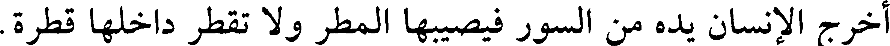
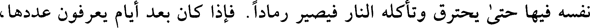
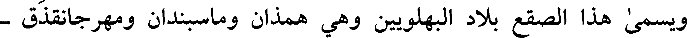
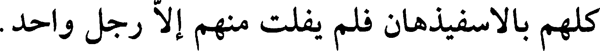

000304.gt.txt

بالقرب من مدينة يقال لها خواش. على سبعة فراسخ من المدينة. وفي هذا الجبل
000305.gt.txt

كهف عظيم يسمع من داخله دوي وخرير مثل خرير الماء، ويرتفع منه بخار مثل
000306.gt.txt

الدخان، فليتصق حواليه. فإذا كثف وكثر، خرج إليه أهل تلك الناحية، فيقلع في
000307.gt.txt

كل شهر أو شهرين. وقد وكل السلطان به قوما، حتى إذا اجتمع سائره أخذ
000308.gt.txt

السلطان منه الخمس وأخذ أهل البلد باقيه فاقتسموه بينهم على سهام قد تراضوا
000309.gt.txt

[بها] فهو النوشادر الذي يحمل إلى سائر الآفاق.
000310.gt.txt

وبها مدينة يقال لها خبيص، لم تمطر داخلها قط وتمطر خارجها. فربما
000311.gt.txt

أخرج الإنسان يده من السور فيصيبها المطر ولا تقطر داخلها قطرة.
000312.gt.txt

وبها خشب لا تحرقه الناس، يلقى فيها ويترك الوقت الطويل ثم يخرج منها
000313.gt.txt

وهو صحيح ما احترق. والنصارى يموهون الخشب ويزعمون أنه من الخشب الذي
000314.gt.txt

صلب عليه - بقولهم - المسيح عليه السلام. وكان مع بعض الرهبان صليب من هذا
000315.gt.txt

الخشب، فافتتن به خلقا من الناس، وذلك أنه كان يلقيه في النار ساعات من النهار
000316.gt.txt

ثم يخرجه عنها ولم تعمل فيه شيئا. فلم يزل على ذلك حتى فطن له رجل من أهل
000317.gt.txt

هذه المدينة. فأتى بقطعة خشبة كانت معه ففعل بها كفعل الراهب فبطل ما كان
000319.gt.txt

وقال المأمون: لو أخذ الطحلب فجفف في الظل وطرح في النار لم يحترق.
000320.gt.txt

414
000321.gt.txt

وطائر يعرف بالسمندل (1) يدخل النار فيتمرغ فيها ثم يخرج منها كما دخل لم
000322.gt.txt

تحترق من ريشه ولا واحدة. وذكر طمياث الحكيم في كتاب الحيوان: إن بالمشرق
000323.gt.txt

طائرا يقال له بنجس في مدينة يقال لها مدينة الشمس وليس له أنثى ولا شكل
000324.gt.txt

يشبهه. وأهل تلك المدينة يعبدون الشمس ويسجدون [93 ب] لها عند طلوعها.
000325.gt.txt

وتسمى المدينة اغفطوس. وهذا الطائر يكون بها ويعرف في غيرها. فإذا أراد الله
000326.gt.txt

بإذنه فيجمع بمنقاره شيئا كثيرا من عيدان الدارصيني. ثم لا يزال يضرب تلك
000327.gt.txt

العيدان بجناحيه مكبا على ذلك لا يفتر، حتى تشتعل نارا. فإذا علا لهبها قذف
000328.gt.txt

نفسه فيها حتى يحترق وتأكله النار فيصير رمادا. فإذا كان بعد أيام يعرفون عددها،
000329.gt.txt

تصور من ذلك الرماد دودة كبيرة فلا تزال تكبر حتى تصير مثل الفرخ ثم ينبت الله له
000330.gt.txt

جناحين (2) وريشا وتعود صورة ذلك الطائر لا يغادر منه شيئا. وأهل هذه المدينة
000331.gt.txt

يذكرون أن ذلك يكون في كل خمسمائة سنة.
000332.gt.txt

وفي بعض مدن خراسان هوة عظيمة في جبل فيها نار تتقد ولا تطفأ شتاء ولا
000333.gt.txt

صيفا. وفي هذه الهوة جرذان كبار بيض تخترق النار في دخولها وخروجها، فإذا
000334.gt.txt
كانت خارجة من الهوة ونظرت إلى إنسان بادرت فخاضت النار مخترقة للهوة إلى
000335.gt.txt

مواضعها لا تؤذيها النار ولا تحرقها.
000336.gt.txt

ومن كرمان إلى سجستان مائة وثمانون فرسخا. ولها من المدن (3) : زالق
000337.gt.txt

415
000338.gt.txt

القول في الجبل
000339.gt.txt

ويسمى هذا الصقع بلاد البهلويين وهي همذان وماسبندان ومهرجانقذق -
000340.gt.txt

وهي الصيمرة - وقم وماه البصرة وماه الكوفة وقرميسين وما ينسب إلى الجبل.
000341.gt.txt

وليس منه: الري وإصبهان وقومس وطبرستان وجرجان وسجستان وكرمان ومكران
000342.gt.txt

وقزوين والديلم والطيلسان والببر.
000343.gt.txt

القول في قرميسين:
000344.gt.txt

قال أبو المنذر هشام بن السائب الكلبي: لما ظفر قتيبة بن مسلم بفيروز بن
000345.gt.txt

كسرى يزدجرد حيث افتتح خراسان أخذ ابنته شاه آفريد (1) ومعها سفط مختوم فوجه
000346.gt.txt

بها إلى الحجاج. فحملها الحجاج إلى الوليد بن عبد الملك. فولدت له يزيد
000347.gt.txt

الناقص. وفض الحجاج السفط فإذا فيه كتاب بالفارسية. فدعا زادانفروخ بن بيري
000348.gt.txt
الكسكري فقرأه، فإذا فيه: بسم الله المصور، ميز قباذ بن فيروز إقليمه ووزن المياه
000349.gt.txt

والترب ليبني لنفسه مدينة ينزلها فوجد أنزه بقاع إقليمه بعد أن بدأ بالعراق التي هي
000350.gt.txt

سرة الأقاليم ثلاثة عشر موضعا: المدائن والسوس وجنديسابور وتستر وسابور
000351.gt.txt

وإصبهان والري وبلخ وسمرقند وباورد وبطن بنهاوند - يعني روذراور - وماسبندان
000352.gt.txt

ومهر جانقذق وتل ماسير.
000353.gt.txt

ووجد أبرد بقاع إقليمه سبعة مواضع: قاليقلا وأردبيل وهمذان وقزوين
000354.gt.txt

وجوالق وخوارزم ومرو.
000355.gt.txt

417
000356.gt.txt

ووجد أوبأ بقاع إقليمه ستة مواضع: البندنيجين وبطن ماستون - وهو شابور
000357.gt.txt

خواست - وجرجان والخوار وبرذعة وزنجان.
000358.gt.txt

ووجد أقحط بقاع إقليمه ثمانية مواضع: ميسان وبادرايا ودستميسان
000359.gt.txt

والكلتانية وباكسايا وما سبندان والري وإصبهان.
000360.gt.txt

ووجد أبخل أهل إقليمه تسعة مواضع: خراسان وإصبهان وأردبيل وماسبندان
000361.gt.txt

وبادرايا وباكسايا وإصطخر وشيراز وفسا.
000362.gt.txt

وأخصب بقاع إقليمه عشرة مواضع أرمينية وآذربيجان وجور ومكران وكرمان
000363.gt.txt

ودستبى [94 ب] وماه الكوفة وماه البصرة وأرجان ودورق.
000364.gt.txt

ووجد أجمل بقاع إقليمه عشرة مواضع: الحيرة والمدائن وكلواذى وسابور
000365.gt.txt

وإصطخر وجنابا والري وإصبهان وقم والنشوى.
000366.gt.txt

ووجد أعقل سبعة مواضع: عكبرا وقطربل وعقرقوف والري وإصبهان
000367.gt.txt

وماسبندان ومهرجانقذق.
000368.gt.txt

وأفطن أهل إقليمه ستة مواضع: إسكاف العليا وإسكاف السفلى ونفر وسمر
000369.gt.txt

وكسكر وعبدسي.
000370.gt.txt

ووجد أحسد أهل إقليمه خمسة مواضع: جرجرايا وحلوان وسحاران (
000371.gt.txt
وهمذان وما سبندان.
000372.gt.txt

ووجد أعلم أهل إقليمه بالسلاح أربعة مواضع: همذان وحلوان وإصبهان
000373.gt.txt

وشهرزور.
000374.gt.txt

ووجد أخف مياه إقليمه عشرة مواضع: دجلة والفرات وجنديسابور
000375.gt.txt

وماسبندان وبلخ وسمرقند وقزوين وماسورا وهي عين بقرميسين وماء ذات المطامير
000376.gt.txt

وماء ملجان قرية الثلج بماسبندان.
000377.gt.txt

418
000378.gt.txt

ووجد أمكر أهل إقليمه أحد عشر موضعا: خراسان وإصبهان والري وهمذان
000379.gt.txt

وأرمينية وآذربيجان وماسبندان ومهرجانقذق وتستر والمذار وأرتوى.
000380.gt.txt

ووجود أسرى فواكه إقليمه سبعة مواضع: المدائن وسابور وأرجان والري
000381.gt.txt

ونهاوند وماسبندان وحلوان الجبل.
000382.gt.txt

ووجد أقل أهل إقليمه نظرا في العواقب أهل ثمانية مواضع: البندنيجين
000383.gt.txt
وماسبندان ومهرجانقذق وأردشيرخره ورامهرمز وأرمينية وآذربيجان وطخرود (1)،
000384.gt.txt

قرية من قرى قم خرج منهم في وقت موافاة العرب أربعة ألف رجل مع كل رجل
000385.gt.txt

خادم وسائس وخباز وطباخ إلى نهاوند ليقاتلوا العرب ويمنعوهم من المقام. فقتلوا
000386.gt.txt

كلهم بالاسفيذهان فلم يفلت منهم إلا رجل واحد.
000387.gt.txt

ووجد أسفل أهل إقليمه أهل ستة مواضع: البندنيجين وبادرايا وباكسايا
000388.gt.txt

وبهندف وقهقور - بطن بماسبندان - وجرود - بطن بنهاوند - .
000389.gt.txt

ولم يجد ما بين المدائن إلى نهر بلخ بقعة على الجادة أنزه ولا أعذب ماء ولا
000390.gt.txt

نسيما من قرميسين إلى عقبة همذان. فأنشأ قرميسين [95 أ] وبنى لنفسه بناء معمدا
000391.gt.txt

على ألف كرم. فقرميسين كلمة فارسية معناها كرمانشاهان.
000392.gt.txt

وبنى الأكاسرة من المدائن إلى عقبة همذان وقصر شيرين مقبرة آل ساسان
000393.gt.txt

وبعقرقوف مقبرة الكيانيين.
000394.gt.txt

ثم نقل قباذ الأشراف من فارس وخراسان وكذلك أهل الجمال والأدب
000395.gt.txt

والفروسية فأسكنهم حافتي دجلة وأنزل أصحاب الصناعات بطن جوخى وأنزل من
000396.gt.txt

كان من وجوه الناس الذين هم دون الأشراف، النهروانات.
000397.gt.txt

419
000398.gt.txt
قال: ولما انتهى بليناس إلى طرازستان وعمل بإزاء القنطرة طلسما للغرق
000399.gt.txt

فسلم أهلها منه. وآخر خلف القنطرة فاستتم بناؤها. وآخر عن يمينها، فجرى الماء
000400.gt.txt

الذي عندها. وآخر عن يسارها فسلمت من السحر. وعمل بالبندنيجين طلسما
000401.gt.txt

للغرق فأمنوا. وآخر للقيارة - عين القير - حتى نضبت. لولا ذلك ما أمكن أحد أن
000402.gt.txt

يشرب من الماء الذي هناك. وكذلك عمل آخر للنفاطة حتى انصرف شعب النفط
000403.gt.txt

إلى جهة أخرى عن الماء.
000404.gt.txt

وعمل عن يسار البندنيجين طلسما للزنابير وآخر للذبة فقلت وكانت أكثر